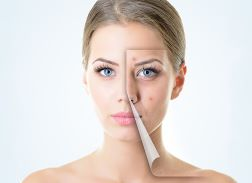
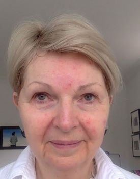

Thank you for your support!
Don't worry about your skin care, we got you!!
Skin care is so important since we want to have a skin like babies. maybe its start as a teenager from a stress , eating a lot or chocolate. Sometimes let you feel less confident or beauty.
| Female | 53% |
| Male | 12% |
| Age 18-24 | 45% |
| Age 25-34 | 38% |
| Age 35-44 | 27% |
| Age 45+ | 20% |
| Dry or sensitive | 25% |
| Oily or acne-prone | 35% |
| Combination | 40% |
Acne is most common in teenagers because of the hormonal changes that occur during puberty. During puberty, the body produces more of the hormones testosterone and androgen. These hormones stimulate the sebaceous glands in the skin to produce more sebum, an oily substance that helps to protect and lubricate the skin.
Hormones: Acne is caused by hormonal changes, such as those that occur during puberty, menstruation, and pregnancy.
Medications: Some medications, such as corticosteroids and lithium, can cause acne as a side effect.
OR
Medical conditions: Some medical conditions, such as polycystic ovary syndrome (PCOS) and Cushing's syndrome, can also cause acne.
🖊️ DJ from Brooklyn supports this.
🖊️ Amy from Queens supports this.
🖊️ Teresa from Harlem supports this.
🖊️ 3 people have signed this petition and support this cause.
Thank you for your support!